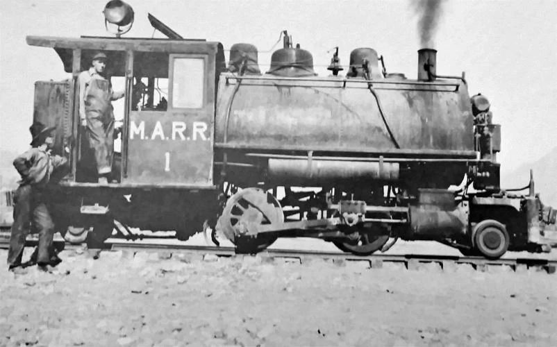

THE MAGMA'S NARROW GAUGE ROSTER
The first engine the Magma ever recieved, 1 was a saddle-tanker 2-4-2T built by ALCo in 1914. It was delivered to Webster, Arizona, and ran until the 1920s-30s, when it was cut up and scrapped.
While a reliable engine, the Magma needed more range. Thus, 2 was built by ALCo as well in 1915. It was still a 2-4-2 saddle tanker, but with the addition of a tender. Its tender was soon stolen, and it was cut up and scrapped in the 30s as well.
Despite the fact that the saddle tank gave extra range, the visibility was greatly reduced. Thus, 3 was built. Still a 2-4-2 with a tender, 3 lacked the saddle that 1 and 2 had. It survived just a little bit longer, only being scrapped in the 40s.
Number 3 was a big success. So much so, in fact, that number 4 was the exact same engine. While boasting slightly newer appliances, the overall silhouette was still almost identical. It also got scrapped in the 1940s.